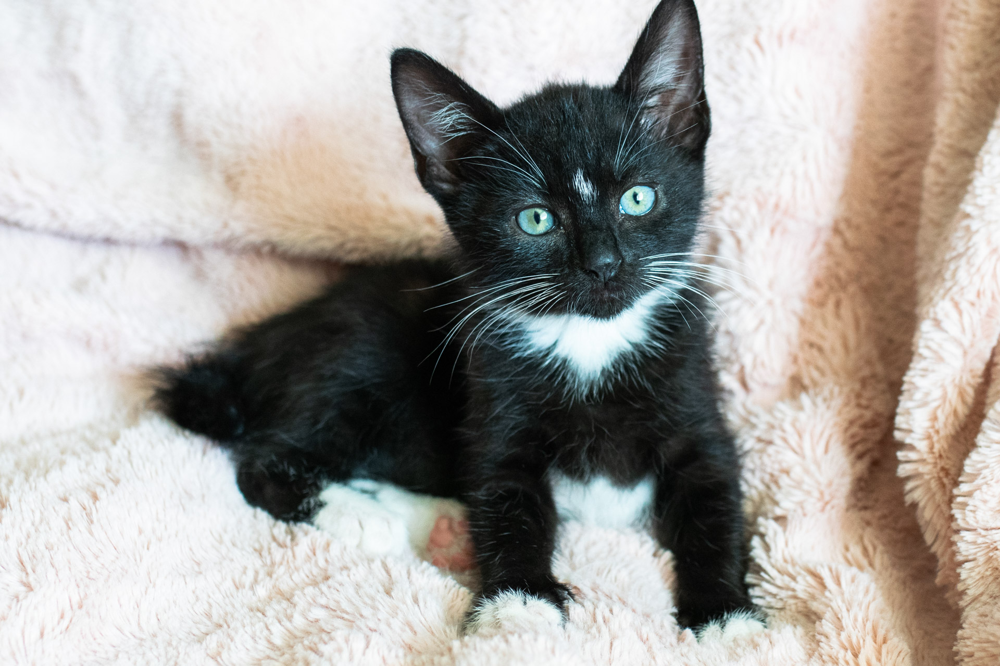
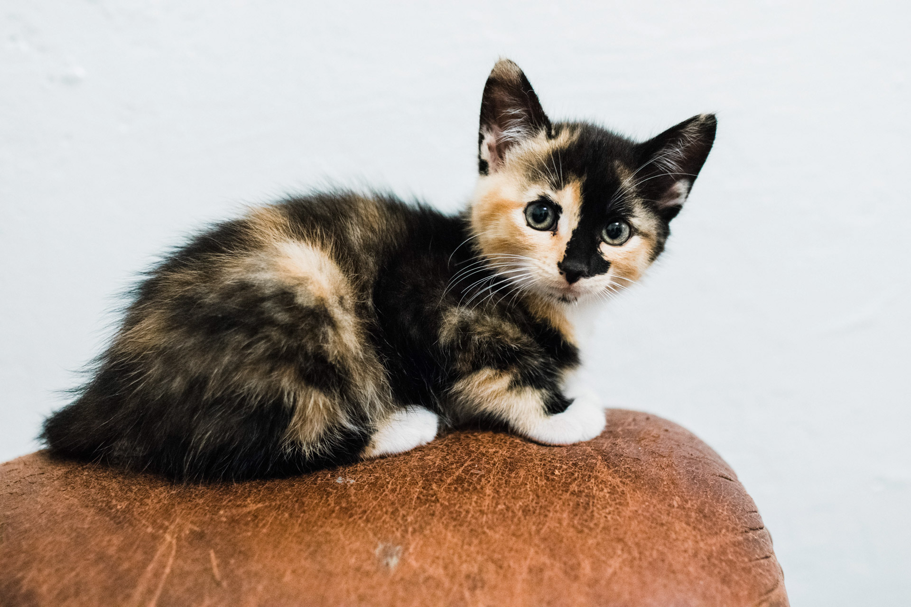
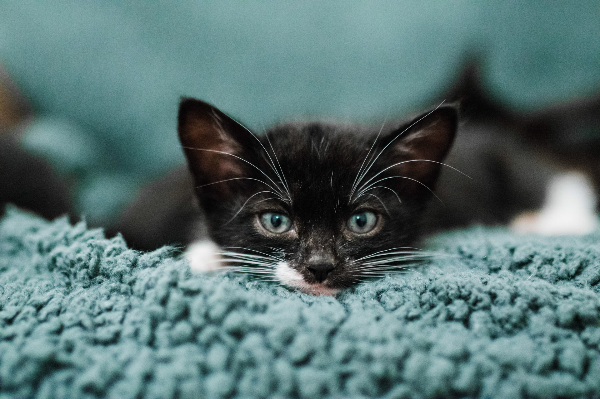

Male | Tuxedo | Short hair
Gary is extremely greedy and bossy and is a thief, but somehow very lovable. If you have a soft spot for rascals, Mr. Potter is for you!
Of all the kittens in the combined litter, Gary is the most food-motivated. He goes crazy for formula and will fight the bottle away from any other kitten in the litter no matter how full he is.
At a glance:
Litter backstory:
Our current fosters all come from two feral litters, born in mid-may 2019, that were combined by their mothers. One of the momma cats disapeared, leaving one teen mom with 10 little kittens. Most of the kittens didn't look like they would make it and so we took the seven smallest home to bottle feed. The remaining three were picked up a month later to socialize and adopt out. Gary is one of the seven who was taken away at 1 – 2 weeks old.
Female | Tortoiseshell | Short hair
The marking above Queenie's eye makes her look angry, but don't be fooled. Despite appearances she is very sweet one-on-one.
Queenie is one of the most skittish kittens in the litter and will likely take time to adjust to a new environment. With a bit of patience, Queenie should bloom into a sweet and playful little girl.
At a glance:
Litter backstory:
Our current fosters all come from two feral litters, born in mid-may 2019, that were combined by their mothers. One of the momma cats disapeared, leaving one teen mom with 10 little kittens. Most of the kittens didn't look like they would make it and so we took the seven smallest home to bottle feed. The remaining three were picked up a month later to socialize and adopt out. Queenie is one of the three who stayed longer with her mom (or adoptive mom).
Male | Tuxedo | Short hair
Otter is extremely soft and cute and is hands-down the biggest cuddle bug of the bunch. He likes nothing better than to snuggle!
Otter is the second most food-motivated of the litter and loves to play. This boy is almost certain to grow up to be a big adoring cat and anyone would be lucky to call him their own.
At a glance:
Litter backstory:
Our current fosters all come from two feral litters, born in mid-may 2019, that were combined by their mothers. One of the momma cats disapeared, leaving one teen mom with 10 little kittens. Most of the kittens didn't look like they would make it and so we took the seven smallest home to bottle feed. The remaining three were picked up a month later to socialize and adopt out. Otter is one of the seven who was taken away at 1 – 2 weeks old.